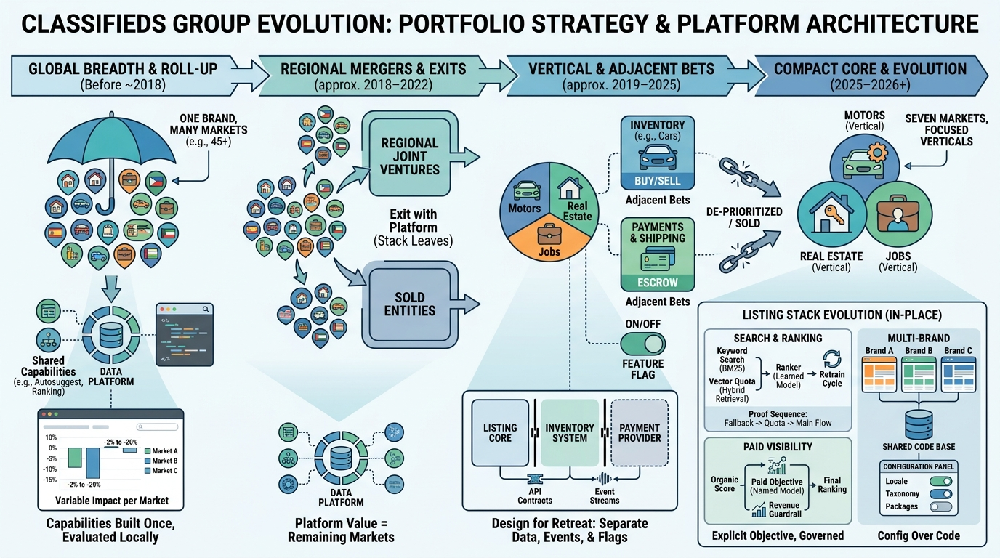

Part IX — PRACTICE: How Others Built It
OLX Group: Regional Platforms, Verticalization and Retreat

Image generated by Google Gemini (gemini-3-pro-image-preview)
Part IX — PRACTICE: How Others Built It

Image generated by Google Gemini (gemini-3-pro-image-preview)